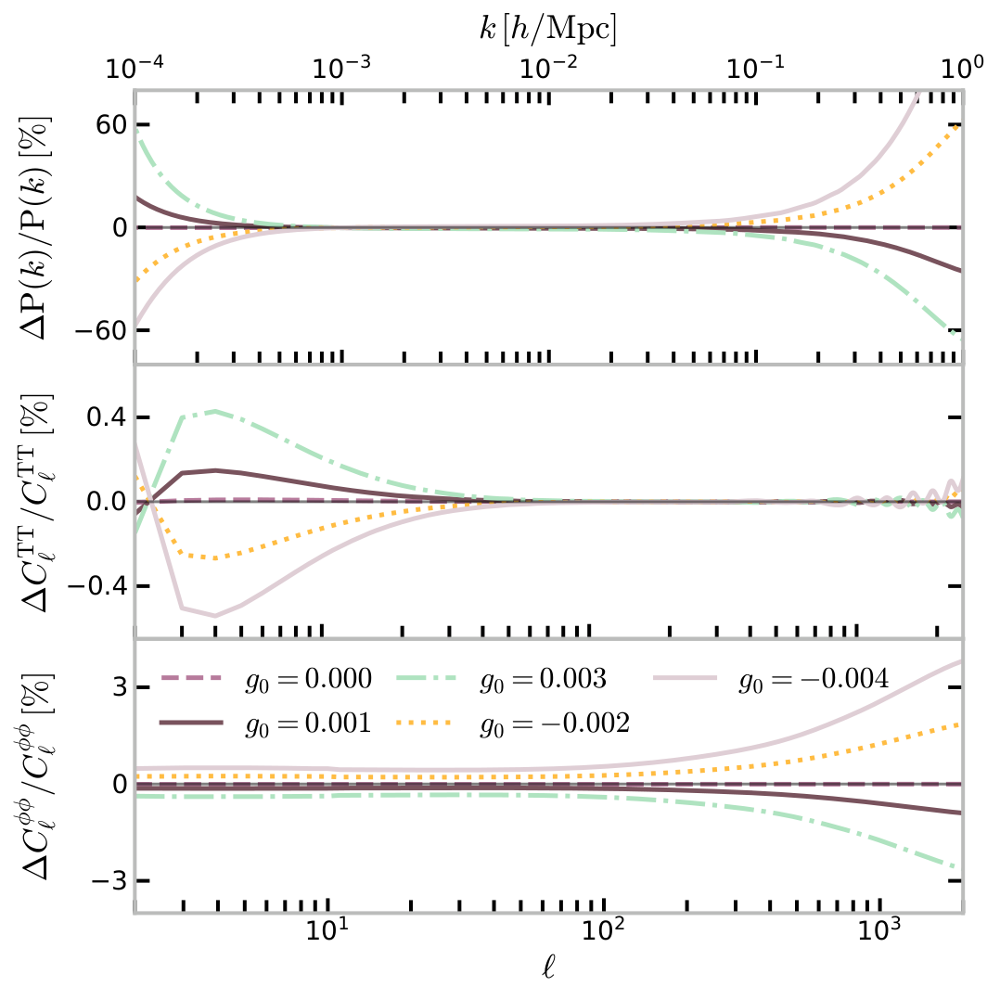
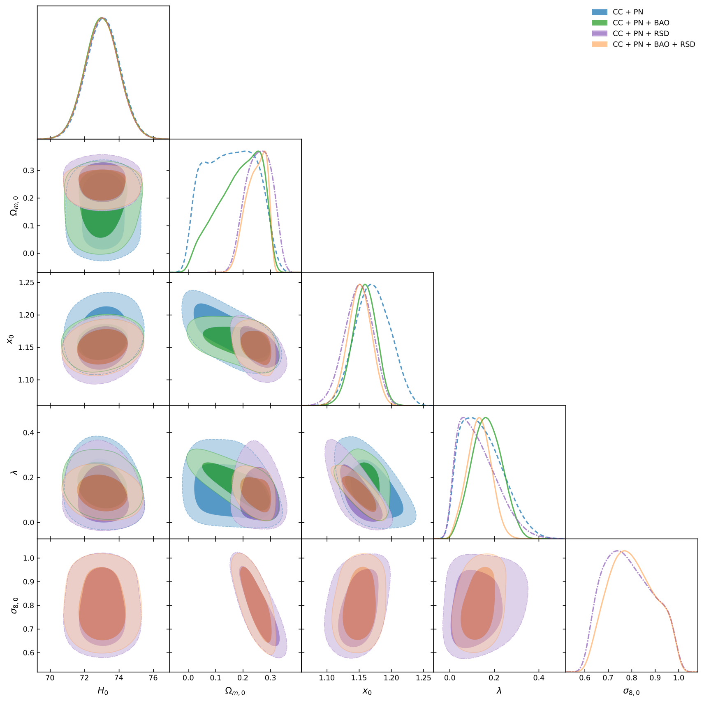
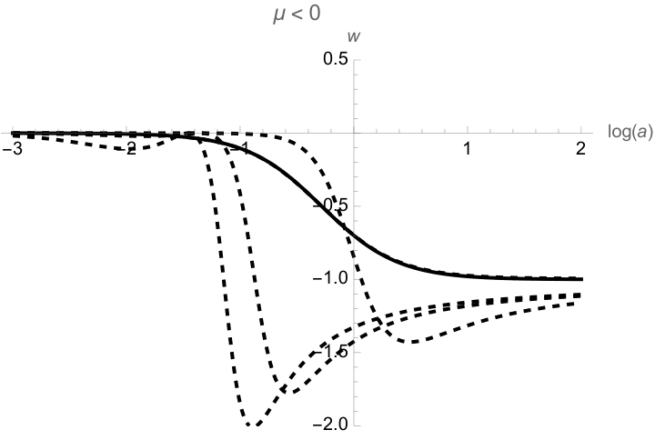
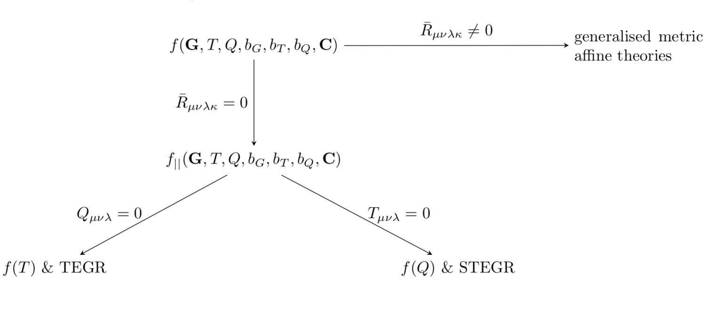
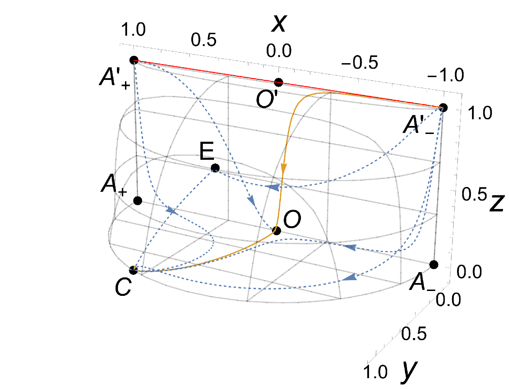

Research
Dark sector interactions
Dark matter and dark energy are usually treated as separate, non-interacting components. I'm interested in what happens when this assumption is relaxed. Rather than prescribing an interaction phenomenologically in the cosmological equations, I focus on constructions at the level of the action. This gives a consistent way to derive both the background evolution and perturbations, and to check the stability of the underlying degrees of freedom. There are several ways to describe these interactions, and much of my work has focussed on exploring their different physical consequences.
In my recent work on intrinsic entropy couplings, interactions between the entropy of dark matter and scalar field dark energy give rise to pure-momentum exchange at linear order. These models leave the background expansion unchanged but can suppress or enhance the growth of structure. This makes them particularly interesting in light of recent measurements of matter clustering and CMB lensing. We have implemented these models into CLASS to calculate their cosmological signatures, showing that their effects on the primary CMB remain small while their effects on the matter power and CMB lensing spectrums are noticeable. A complementary direction I am working on is using the effective field theory approach to cosmological media, where dark matter and dark energy can be described as parts of an interacting fluid–superfluid system, with the allowed interactions determined by its symmetries.
We are now constraining the entropy-coupled models using Cobaya, combining CMB temperature, polarisation and lensing measurements from ACT DR6, SPT-3G and Planck with DESI DR2 BAO and Pantheon+ supernova data. I'm particularly interested in what lensing can tell us about the viability of these interactions, and whether the same models can consistently describe our observations or potentially address ongoing cosmic tensions.
Related papers

Cosmological constraints
I work on confronting extensions of ΛCDM with cosmological data. I'm interested in how measurements of the expansion history and the growth of structure can be combined to distinguish models that give similar background predictions. This involves deriving their cosmological evolution and perturbations, checking the approximations used, and comparing their predictions with data.
My recent work on k-essence examines dark degeneracies, where part of the dark energy sector behaves like pressureless matter, making it difficult to distinguish from dark matter using background observations alone. In the ghost and dilatonic ghost condensate models, we find that redshift-space distortion measurements help break these degeneracies when combined with supernova and BAO data. An important part of this work is using stability-informed priors, so that the parameter inference is restricted to solutions without ghosts or gradient instabilities. This builds on my earlier work connecting a geometric formulation of k-essence with late-time cosmological constraints.
I'm now extending this analysis to confront these k-essence models with a fuller combination of early- and late-time datasets. The CMB constraints are particularly important since the ghost and dilatonic ghost condensate models can have radiation-like behaviour at early times, which can leave distinctive signatures in the TT spectrum. I aim to understand how these signatures constrain the models and how the resulting constraints compare with those from late-time data. We then plan to look at extensions with couplings to matter, leading to richer deviations from ΛCDM.
Related papers

Effective cosmological fluids
Cosmological fluids are often used to describe matter, but their underlying degrees of freedom and thermodynamic assumptions are not always made explicit, and one often describes them phenomenologically. Instead, I work with the Brown and Schutz action formulations of relativistic fluids, as well as the effective field theory (EFT) of cosmological media, which provide concrete Lagrangian descriptions. These different approaches give complementary ways to describe fluid dynamics: one starts from fluid variables and their constraints, while the other builds the action from fields and symmetries. In my work on relativistic interacting fluids, we extended the fluid action to include entropy production and particle creation, with applications to a unified dark sector.
My recent EFT work studies derivative interactions between a perfect fluid and a superfluid. We find that stability conditions prevent these interactions from supporting slow-roll expansion, and exclude a phantom-to-non-phantom crossing in the effective dark energy component. I'm also interested in the thermodynamic interpretation of these descriptions. In our work on non-minimal fluid Lagrangian couplings, we showed that the Brown and Schutz formulations are no longer equivalent when coupled to curvature, leading to different fluid equations and effective thermodynamic quantities.
We’re now using fluid–superfluid interactions within the EFT approach to model the complete dark sector. We are implementing these models in CLASS to follow their background evolution and perturbations, and to investigate their observational signatures. I'm particularly interested in how the interactions affect matter clustering and the CMB, and how these predictions depend on the fluid's underlying degrees of freedom.
Related papers

Modified gravity
My PhD focussed on geometric modifications of gravity, including theories involving curvature, torsion and nonmetricity. I developed a unified approach to these theories and their metric-affine extensions, studying the role of boundary terms, symmetries and additional degrees of freedom. I have also worked on higher-derivative gravity, lower-dimension models, conformal and projective invariant models, and inflationary and spherically symmetric solutions. Throughout these projects, I have focused on the consistency of these modifications. For instance, in my solo work on f(Q) cosmology, I investigated the coincident-gauge descriptions for both spatially flat and curved cosmologies, clarified inconsistencies in earlier treatments, and explored the relation between symmetry breaking and geometry.
I'm currently investigating the cosmology of Einstein–Weyl theories, where the geometry includes both curvature and vectorial nonmetricity. In particular, I'm interested in matter with hypermomentum, with a current sourced by an independent connection. This leads to a model equivalently described in terms of a non-minimally coupled gravitational vector interacting with matter. My focus is on deriving the cosmological dynamics and understanding how these couplings affect the propagating degrees of freedom and their stability.
Related papers

Cosmological dynamical systems
I use dynamical systems methods to study the evolution of cosmological models, including their early- and late-time behaviour. Writing the cosmological equations as an autonomous system makes it possible to identify fixed points, study their stability and understand which cosmological histories are connected. I've applied these methods to modified gravity, non-minimally coupled fluids and scalar fields, and k-essence. I'm particularly interested in combining the phase-space analysis with physical conditions such as the absence of ghosts and gradient instabilities.
I continue to use these methods to inform the priors used in cosmological parameter inference. Understanding the phase space helps identify which initial conditions and parameter choices give physically viable histories, and which lead to unstable or singular behaviour. This provides a way to connect the theoretical analysis of a model with the parameter regions tested against observations.
Related papers
